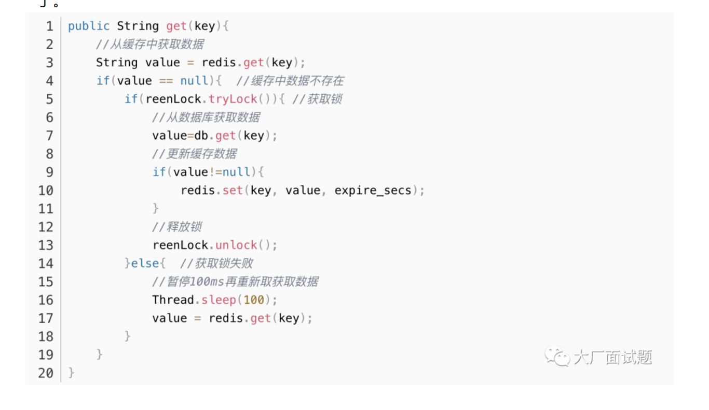
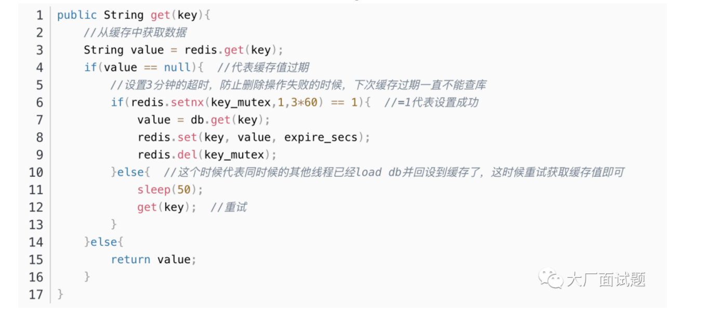
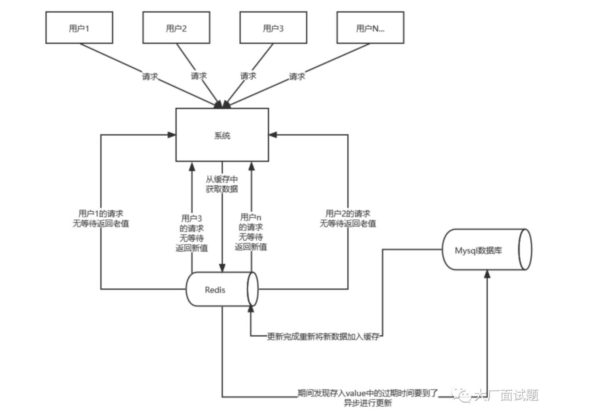
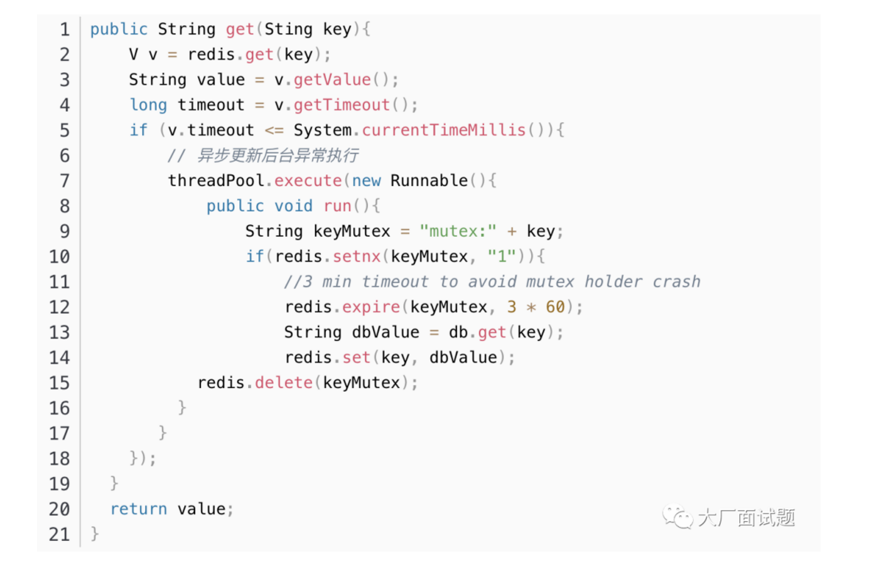
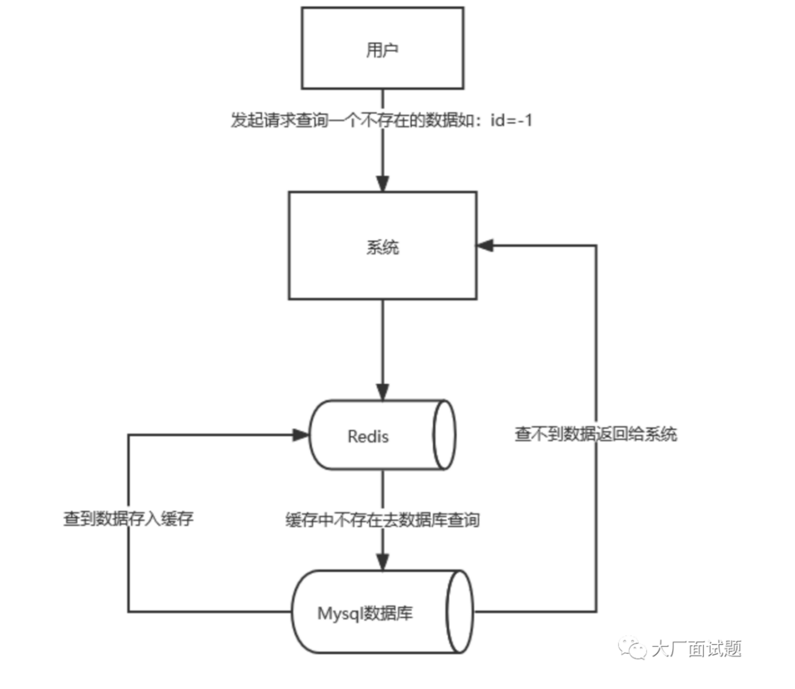
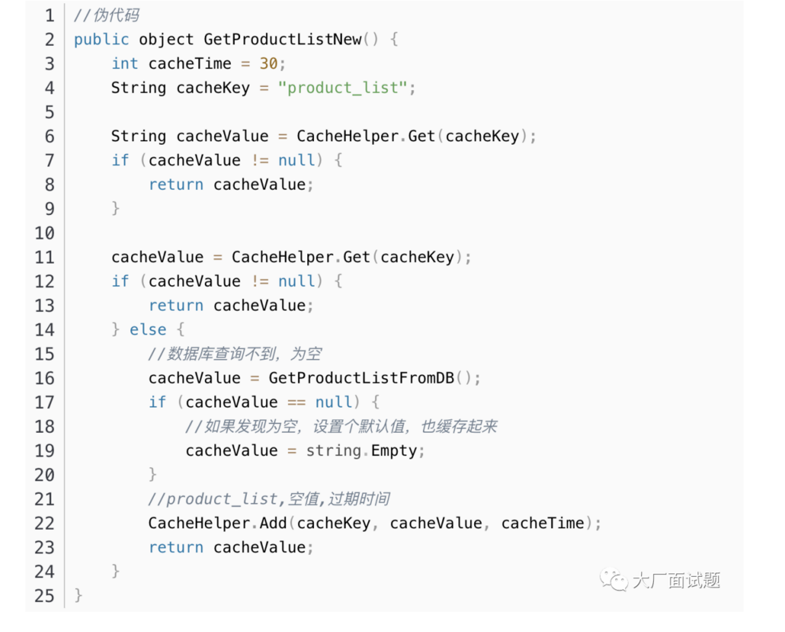
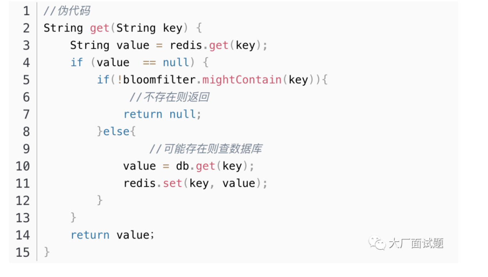
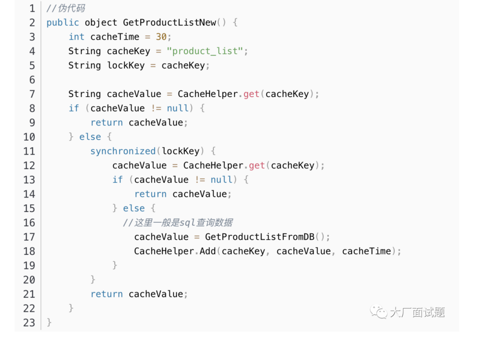
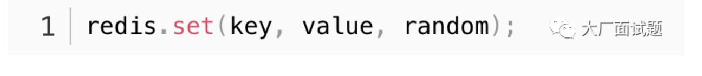
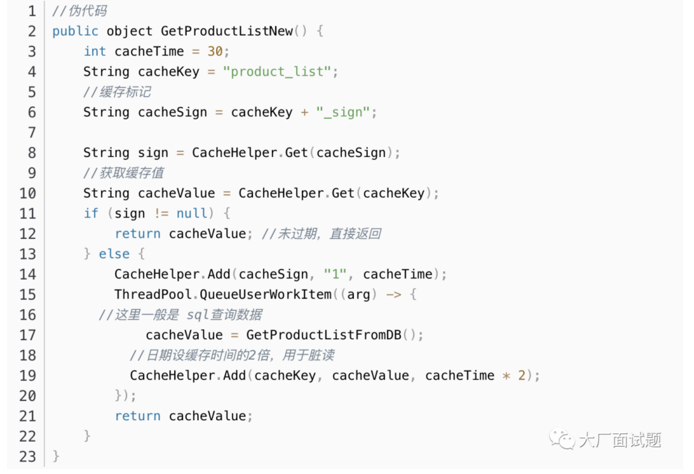

Redis缓存
缓存定义
缓存(Cache),就是数据交换的缓冲区,俗称的缓存就是缓冲区内的数据,一般从数据库中获取,存储于本地代码，读写性能较高。
为什么要使用缓存
一句话:因为速度快,好用
缓存数据存储于代码中,而代码运行在内存中,内存的读写性能远高于磁盘,缓存可以大大降低用户访问并发量带来的服务器读写压力
实际开发过程中,企业的数据量,少则几十万,多则几千万,这么大数据量,如果没有缓存来作为”避震器”,系统是几乎撑不住的,所以企业会大量运用到缓存技术。但是缓存也会增加代码复杂度和运营的成本。
如何使用缓存
实际开发中,会构筑多级缓存来使系统运行速度进一步提升,例如:本地缓存与redis中的缓存并发使用
浏览器缓存：主要是存在于浏览器端的缓存
应用层缓存：可以分为tomcat本地缓存，比如之前提到的map，或者是使用redis作为缓存
数据库缓存：在数据库中有一片空间是 buffer pool，增改查数据都会先加载到mysql的缓存中
CPU缓存：当代计算机最大的问题是 cpu性能提升了，但内存读写速度没有跟上，所以为了适应当下的情况，增加了cpu的L1，L2，L3级的缓存
在使用redis开发的过程中，缓存穿透、击穿、雪崩等是很难避免的问题。也是在面试过程中经常被问到的问题，今天将分别讲解这三类问题，以及多种解决方案。
缓存击穿
缓存击穿是指一个Key非常热点，在某些时间点被超高并发地访问，当这个Key在失效的瞬间持续的大并发穿破了缓存(Redis)直接请求到数据库(DB)从而导致数据库出现问题。
解决方案一：使用互斥锁
这种解决方案思路比较简单，就是只让一个线程查询数据库，其它线程等待查询数据库的线程执行完毕并且重新将数据加入缓存，其它线程从缓存获取数据就可以了。
如果是单机系统，可以用synchronized或者lock来处理。分布式系统可以用redis的setnx操作。
单机环境
- 单机环境中实现的原理大概就是当缓存数据过期后，大量请求进来，只有首个线程可以访问数据库其它线程暂停等主线程查询到数据并释放了锁，其它线程就可以直接在缓存中读取数据了。

分布式环境
- 在缓存失效的时候先判断拿出来的值为空，不是立即去查库，而是先使用缓存工具的某些带成功操作返回值的操作（比如Redis的setnx），去set一个mutex key，当操作返回成功时，再进行查库操作并回设缓存。否则，就重试整个get缓存的方法。

解决方案二：热点数据永不过期
要值得注意的是，这里说到的永不过期并不是将热点数据存在时间设置为无限制。而是将过期时间存在key对应的value里，如果发现要过期了，通过一个后台的异步线程进行缓存的重建。

从实战看，这种方法对于性能非常友好，唯一不足的就是重建缓存时候，其余线程(非重建缓存的线程)可能访问的是老数据，但是对于一般的互联网功能来说这个还是可以忍受。

解决方案三：定时刷新
后台定义一个job(定时任务)专门主动更新缓存数据，比如一个缓存中的数据过期时间是30分钟,那么job每隔29分钟定时刷新数据(将从数据库中查到的数据更新到缓存中)。
这种方案比较容易理解，但会增加系统复杂度。比较适合那些 key 相对固定。缓存粒度较大的业务，key比较分散的则不太适合，实现起来也比较复杂。
缓存穿透
缓存穿透是指用户恶意的发起大量请求去查询一个缓存(Redis)和数据库(DB)中都没有的数据，出于容错考虑从数据库(DB)查不到数据则不写入缓存(Redis)这将导致每个请求都要到数据库(DB)中查询，失去了缓存的意义，从而导致数据库因压力过大挂掉。

解决方案一：对空数据进行缓存
对空数据进行缓存是一个简单粗暴的方法，如果一个查询返回的数据为空（不管是数据不存在，还是系统故障），我们仍然把这个空结果进行缓存，但它的过期时间会很短，最长不超过五分钟。
这种办法虽然能阻挡大量穿透请求，但是这个空值不具有任何实际业务性，而且如果大量发送获取不存在数据的穿透请求的话（例如恶意攻击），则会浪费缓存空间，如果这种null值过量的话，还会淘汰掉本身缓存存在的数据，这就会使我们的缓存命中率下降。

解决方案二：布隆过滤器
这种技术在缓存之前再加一层屏障，里面存储目前数据库中存在的所有key。当业务系统有查询请求的时候，首先去BloomFilter中查询该key是否存在。若不存在，则说明数据库中也不存在该数据，因此缓存都不要查了，直接返回null。若存在，则继续执行后续的流程，先前往缓存中查询，缓存中没有的话再前往数据库中的查询。

缓存雪崩
缓存雪崩是指缓存服务器重启或缓存(Redis)中的数据在同一时间内大批量过期，因查询数据量太大引起数据库压力过大甚至宕机。
解决方案一：加锁排队
加锁排队只是为了减轻数据库的压力，并没有提高系统吞吐量。假设在高并发下，缓存重建期间key是锁着的，这是过来1000个请求999个都在阻塞的。同样会导致用户等待超时，这是个治标不治本的方法！
注意：在高并发场景下尽可能不用！

解决方案二：设置过期时间随机值
避免缓存设置相近的有效期，为有效期增加随机值(1-5分钟)使失效时间均匀分布。这样每一个缓存的过期时间的重复率就会降低，很难引发集体失效的事件。

解决方案三：设置过期标志更新缓存
缓存标记：记录缓存数据是否过期，如果过期会触发通知另外的线程在后台去更新实际key的缓存；
缓存数据：它的过期时间比缓存标记的时间延长1倍，例：标记缓存时间30分钟，数据缓存设置为60分钟。这样，当缓存标记key过期后，实际缓存还能把旧数据返回给调用端，直到另外的线程在后台更新完成后，才会返回新缓存。

总结
缓存击穿
key对应的数据存在，但在redis中过期，此时若有大量并发请求过来，这些请求发现缓存过期一般都会从后端DB加载数据并回设到缓存，这个时候大并发的请求可能会瞬间把后端DB压垮。一般通过互斥锁，热点数据永不过期，定时刷新过期时间等方法解决该问题。
缓存穿透
key对应的数据在数据源并不存在，每次针对此key的请求从缓存获取不到，请求都会到数据源，从而可能压垮数据源。比如用一个不存在的用户id获取用户信息，不论缓存还是数据库都没有，若黑客利用此漏洞进行攻击可能压垮数据库。一般通过对空数据进行缓存，布隆过滤器等方法解决该问题。
缓存雪崩
当缓存服务器重启或者大量缓存集中在某一个时间段失效，这样在失效的时候，也会给后端系统(比如DB)带来很大压力。一般通过加锁排队，设置过期时间随机值等方法解决该问题。
博客参考微信公众号 大厂面试题 《扒一扒Redis，缓存击穿，缓存穿透，缓存雪崩，附解决方案》。